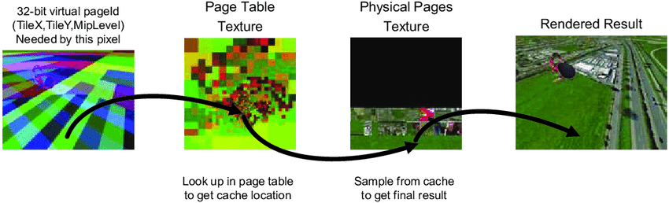

# VirtualTexture
# 什么是 VirtualTexture
虚拟纹理就是一种以空间换时间的纹理流送技术，好处是可以让我们使用高分辨率贴图不受内存和带宽影响。
传统流送就是在需要使用某张纹理的时候会一次性将对应的 mip 的整个纹理全部加载到 GPU 内存中，即使这个纹理只看到一小部分，这样就会照成巨大的带宽消耗，而虚拟纹理就是把一张大的贴图切成一个个小 page，只有在看到这个 page 的时候才会加载到内存中
# UE 的 VT
虚幻引擎 4 (UE4) 支持两种虚拟纹理方法：运行时虚拟纹理 (RVT) 和 流送虚拟纹理 (SVT)。
| 流送虚拟纹理（SVT） | 运行时虚拟纹理（RVT） |
|---|---|
| - 支持超高纹理分辨率。- 按需将纹素数据缓存于内存中。- 在硬盘中烘焙和加载纹素数据。- 非常适用于生成时间较长的纹理数据，如光照贴图或美术师创建的大型细节纹理。 | - 支持超高纹理分辨率。- 按需将纹素数据缓存于内存中。- 运行时由 GPU 生成的纹素数据。- 非常适用于可按需渲染的纹理数据，如过程纹理或合成分层材质。 |
# 简述术语一览
- Virtual Texture（VT）：虚拟纹理。虚拟纹理将传统 mip 纹理划分为更小的页（Virtual Texture Page）储存，以实现对页的单独引用而避免流送过多的冗余纹理。
- Feedback：存储当前屏幕像素对应的 VT Page 信息，用于决定哪些 VT 数据需要被处理和生成。
- Physical Texture：虚拟纹理对应的物理纹理资源，是对 VT 采样过程中的实际引用对象。Physical Texture 也划分为许多页（Physical Texture Page），用来采样和储存虚拟纹理。
- PageTable：虚拟纹理页表，用来寻址 VT Physical Texture Page 数据。使用中的 Virtual Texture Page 与 PageTable Texel 是一一对应的关系。
VT 的实现过程可以大致分为两个阶段：准备阶段 和 采样阶段。
准备阶段会处理与 VT 相关的判断逻辑以及生成 VT 相关数据。其中大致包括：
- 生成 Feedback，并执行逻辑判断需要处理哪些 Virtual Texture Page。
- 将 Virtual Texture Page 加载到 Physical Texture Page。
- 生成和更新 PageTable 数据。
采样阶段利用已生成的 VT 数据生成场景对象的 Physical Texture UV 并进行采样：
- 根据屏幕空间坐标以及相关信息（PageTable 数据）生成 Physical Texture UV。
- 对 Physical Texture 执行采样。
其主要步骤如下：
- 判断需要哪些 Tile，判断屏幕上需要绘制哪些贴图，以及屏幕像素上那个贴图用到的 mipmap 级别。这是通过我们一种叫做 Feedback 数据做到的。
- 装载，靠 streaming 把需要的贴图 Tile 装载进来。放入显存的一张实际要使用的贴图（physical texture。这张显存贴图，是由很多 Tile 拼凑而成的）
- 绘制场景物体。绘制过程中，在 pixel shader 中，因为一开始会生成 Feedback texture，里面记录这 uv 和 offset，那么我们就可以直接用这个 uv 去采样 physical texture。以便用显存贴图来正确绘制场景物体。
下图将显示我们的采样流程


首先我们对当前屏幕中的 VT 贴图的使用情况进行分析，判断属于哪些贴图，哪个 Tile 和对应的 mipmap，如果 Cache 未命中，我们就加载进来。之后进行采样的时候根据我们的页表（PageTable\Indirection table）来找到我们的实际的 physical texture 上的位置，进行最终的采样。
因此我们可以看出，和一般的贴图使用上，其多了一个渲染资源 PageTable（UE 中的叫法）。shader 中通过这里的 PageTable 找到对应的 physical texture 的位置。这跟 virtual memory 的做法是一致的。
一开始生成 Feedback 储存的数据如下

虚幻引擎中，PageTable 最多存在 16 个，单个 PageTable 尺寸上限为 4096x4096。
# 流送虚拟纹理 (Streaming Virtual Texture)
可降低使用超大尺寸纹理时的纹理内存开销，包括支持虚拟纹理光照贴图和 UDIM（U 维度）。与现有的基于 mip 纹理流送相比，流送虚拟纹理是一种从硬盘流送纹理的替代方法。
# 运行时虚拟纹理 (Running Virtual Texture)
可有效渲染过程生成或分层的复杂材质，使运行时虚拟纹理适用于渲染复杂的地形材质。其能改善地形样条、网格体和材质贴花，及一般地形与对象混合的渲染性能和工作流程。
RVT 的经典场景是解决地形问题，如果我们想要渲染一块地形，我们指导地形是非常复杂的，其本身会有很多的 layer 通过权重贴图来进行混合，因此其会需要采样相当多次的贴图，并且这些贴图的大小都是非常客观的。假设我们不超过四个图层的情况下，采样 9 次（四个图层四次，对应四张法线贴图四次，再采样 splat map 一次），超过四个图层，那就采样 9 的倍数次。这样的开销会对美术效果有非常大的限制。而 RVT 就是直接把这些 Layer 烘焙好那么到时候直接采样一次就可以了
更重要的是这样的采样每帧都要进行的，但很多情况下，静态的地形数据是完全无变化的，我们完全可以把这些采样后得到的结果给记录下来，也就是把相当耗时的计算结果直接存储下来，使用的时候采样我们最后的结果就可以了。
从 RVT 的使用场景中可以看出来，其本身并不是解决空间存储问题的。而是解决材质复杂度的性能问题。
RVT 在实际中并不是一张贴图，而是很多贴图的集合。这里记录的东西跟 Gbuffer 里面的数据非常类似。我们根据自己的需要，可以选择我们这个 RVT 中实际将要含有哪几张贴图。
# 何时 (不) 使用 SVT
由于要进行额外的逻辑判断和采样计算，抉择何时使用虚拟纹理时需要慎重，以下列举了应当避免使用虚拟纹理的情况：
- 纹理分辨率很低（<1K）时。虚拟纹理的目的是以时间换空间，足够轻量的纹理不值得这么做。
- 没有额外的性能预算时。至少为虚拟纹理准备 1~3ms 性能预算。
- 无法支付足够的常驻内存时。虚拟纹理将常驻一部分显存以存放 Physical Texture 和 PageTable Texture。
- 只有极少的纹理需要使用虚拟纹理时。
何时能够使用虚拟纹理：
- 当有大量高分辨率纹理（>2K）时。
- 场景中有大量遮挡元素且满足第一条时。
- 每个纹理只接受一次虚拟纹理采样。使用不同的 UV，则虚拟纹理堆栈获取将增加开销。
- 能够不计代价地提升纹理质量时。